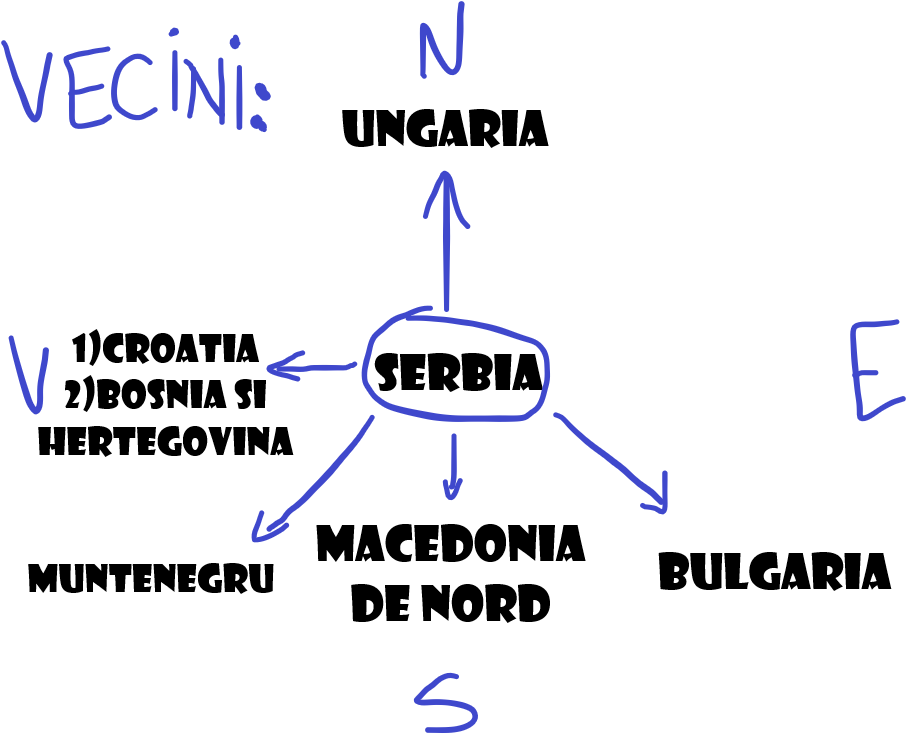

Descriere:
Serbia este un stat suveran situat la răscrucea Europei Centrale cu cea de Sud-Est, în sudul Câmpiei Panonice și în Balcanii centrali.
Vecini:
Inceput:
Teritoriul a fost locuit din paleolitic, iar migratiile slave în Balcani dintre secolele 5-7 au dus la formarea câtorva state suverane în Evul Mediu timpuriu, state care uneori au recunoscut în mod nominal suzeranitatea bizantină, francă și maghiară. Regatul Serbiei a obținut recunoașterea de către Vatican și Constantinopol în 1217,ajungând la apogeu în 1346 ca un Țarat Sârb de relativ scurtă durată. La mijlocul secolului al 16-lea, întreaga Serbia modernă a fost anexată de otomani, dominație uneori întreruptă de Imperiul Habsburgic, care a început să se extindă spre Serbia Centrală pe la sfârșitul secolului al 17-lea, reușind să cucerească și să mențină sub control un cap de pod în Vojvodina modernă. La începutul secolului al 19-lea, Revoluția sârbă a dus la apariția statului național ca prima monarhie constituțională din regiune, care și-a extins ulterior teritoriul.După pierderile omenești dezastruoase din Primul Război Mondial și unificarea ulterioară a fostei coroane Habsburgice a Voivodinei (și a altor teritorii) cu Serbia, țara a cofondat, împreună cu alte popoare slave sudice, Iugoslavia, stat ce a existat în diferite configurații politice până la războaiele iugoslave din anii 1990. În procesul destrămării Iugoslaviei, Serbia a format o uniune statală cu Muntenegru care a fost însă dizolvată pe cale pașnică în 2006.În 2008, parlamentul provinciei Kosovo a declarat în mod unilateral independența acestui teritoriu, și a fost recunoscut de majoritatea țărilor membre ONU.
Etimologie:
Serbia este membră a ONU, Consiliului Europei, OSCE, PpP, OCEMN, CEFTA și în curs de aderare la OMC.Începând din 2014, țara negociază aderarea la UE cu perspectiva aderării la Uniunea Europeană până în 2025.Din 2007, Serbia aderă formal la politica de neutralitate militară. O economie cu venituri medii spre ridicate,dominată de sectorul serviciilor, urmat de sectorul industrial și agricultura, țara se situează relativ sus pe indicele dezvoltării umane indicele progresului social și pe indicele global al păcii.
Preistorie:
Dovezile arheologice de așezări din paleolitic pe teritoriul Serbiei actuale sunt rare. Un fragment de maxilar uman a fost găsit în defileul Sićevo (Mala Balanica) și se crede că are o vechime de până la 525.000–397.000 de ani. Cam pe la 6.500 î.e.n., în perioada neolitică, culturile Starcevo și Vinca au existat în Belgradul modern sau în apropierea acestuia și au dominat o mare parte a Europei de Sud-Est (precum și părți din Europa Centrală și Asia Mică).Două importante situri arheologice locale din această epocă, Lepenski Vir și Vinča-Belo Brdo, există încă în apropierea malurilor Dunării.
Istoria antica:
În timpul Epocii Fierului, tracii, dacii și ilirii au fost găsiți de grecii antici în timpul expansiunii lor în sudul Serbiei moderne, în secolul al 4-lea î.e.n.; punctul de nord-vest al imperiului lui Alexandru cel Mare era în zona orașului Kale-Krševica.Tribul celtic al lui scordiscilor s-a așezat în întreaga zonă în secolul al III-lea î.e.n. și a format un stat tribal, construind mai multe fortificații, inclusiv capitala de la Singidunum (actualul Belgrad) și Naissos (actualul Niš), însă au sfârșit prin a fi asimilați de masa traco-ilirică. Rămășițele Palatului Imperial Felix Romuliana, sit în Patrimoniul Mondial UNESCO Coif roman din secolul 4 d.Hr.Romanii au cucerit o mare parte a teritoriului în secolul al 2-lea î.e.n. În 167 î.e.n. a fost înființată provincia romană Illyricum; restul a fost cucerit în jurul anului 75 î.e.n., formând provincia romană Moesia Superior; regiunea modernă Srem a fost cucerită în 9 î.e.n.; iar Bačka și Banatul în 106 e.n., după Războaiele Dacice. Drept urmare, Serbia contemporană se extinde integral sau parțial pe mai multe foste provincii romane, între care Moesia, Pannonia, Praevalitana, Dalmația, Dacia și Macedonia. Principalele orașe din Moesia Superioară (și din împrejurimi) erau: Singidunum (Belgrad), Viminacium (astăzi vechiul Kostolac), Remesiana (astăzi, Bela Palanka), Naissos (Niš) și Sirmium (astăzi, Sremska Mitrovica), care a fost una din capitalele romane în timpul Tetrarhiei.17 împărați romani s-au născut în zona Serbiei moderne, țara fiind pe locul doi doar după Italia contemporană.Cel mai faimos dintre aceștia a fost Constantin cel Mare, primul împărat creștin, care a emis un edict de toleranță religioasă în întregul Imperiu. Când Imperiul Roman a fost divizat în 395, cea mai mare parte a Serbiei a rămas sub Imperiul Roman de Răsărit, în timp ce părțile sale din nord-vest au fost incluse în Imperiul Roman de Apus. De la începutul secolului al 6-lea, slavii, prezenți în tot Imperiul Bizantin în număr mare,s-au amestecat cu populația băștinașă (daci, iliri, traci romanizați) și au asimilat-o, din acest amestec de popoare rezultând slavii sudici actuali, printre care și sârbii.
Revoluția:
Revoluția sârbă pentru independență față de Imperiul Otoman a durat unsprezece ani, între 1804 și 1815.Revoluția a cuprins două revolte separate, care au dus la autonomie în cadrul Imperiului Otoman, care a evoluat încet spre independență deplină (1835-1867).În timpul Primei Răscoale Sârbe, condusă de vožd Karađorđe Petrović, Serbia a devenit independentă timp de aproape un deceniu înainte ca armata otomană să poată reocupa țara. La scurt timp după aceasta, a început cea de a Doua Răscoală Sârbă. Conduisă de Miloš Obrenović, ea s-a încheiat în 1815 cu un compromis între revoluționarii sârbi și autoritățile otomane.De asemenea, Serbia a fost una dintre primele națiuni din Balcani care a eliminat feudalismul.Convenția de la Ackerman din 1826, tratatul de la Adrianopol din 1829 și, în cele din urmă, Hatt-i Sharif, au recunoscut suveranitatea Serbiei. Prima Constituție a Serbiei a fost adoptată la 15 februarie 1835. După ciocnirile între armata otomană și sârbii din Belgrad din 1862 și sub presiunea marilor puteri, până în 1867 ultimii soldați turci au părăsit Principatul, lăsând țara de facto independentă. Prin adoptarea unei noi constituții fără consultarea Porții, diplomații sârbi au acționat în sensul acestei independențe de facto. În 1876, Serbia a declarat război Imperiului Otoman, proclamând unificarea cu Bosnia.
Independenta:
Independența oficială a țării a fost recunoscută la nivel internațional prin Congresul de la Berlin din 1878, care a pus capăt în mod oficial războiului ruso-turc; acest tratat, însă, a interzis Serbiei să se unească cu Bosnia, plasând Bosnia sub ocupație austro-ungară, alături de ocupația Sangeacului Novi Pazar.Din 1815 până în 1903, Principatul Serbiei a fost condus de Casa Obrenović, cu excepția domniei lui Aleksandar Karađorđević între 1842 și 1858. În 1882, Principatul Serbiei a devenit Regatul Serbiei, condus de regele Milan I. Dinastia Karađorđević, descendenții liderului revoluționar Karađorđe Petrović, și-a asumat puterea în 1903 ca urmare a loviturii de stat din mai(d). În nord, revoluția din 1848 din Austria a condus la înființarea teritoriului autonom al Voivodinei sârbești; până în 1849, regiunea a fost transformată în Voievodina Sârbească și Banatul Timișan.